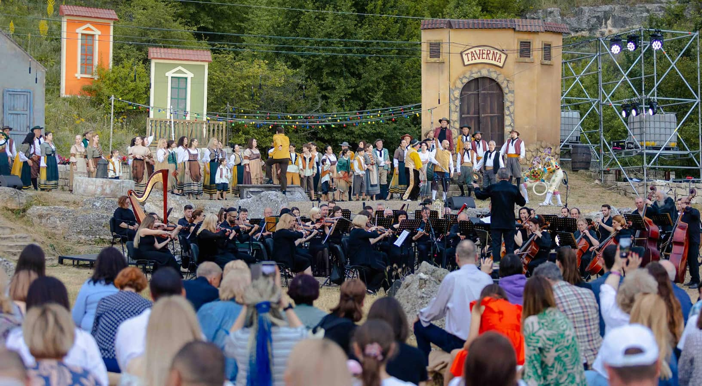
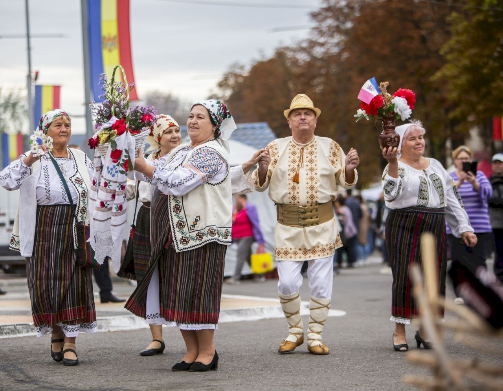
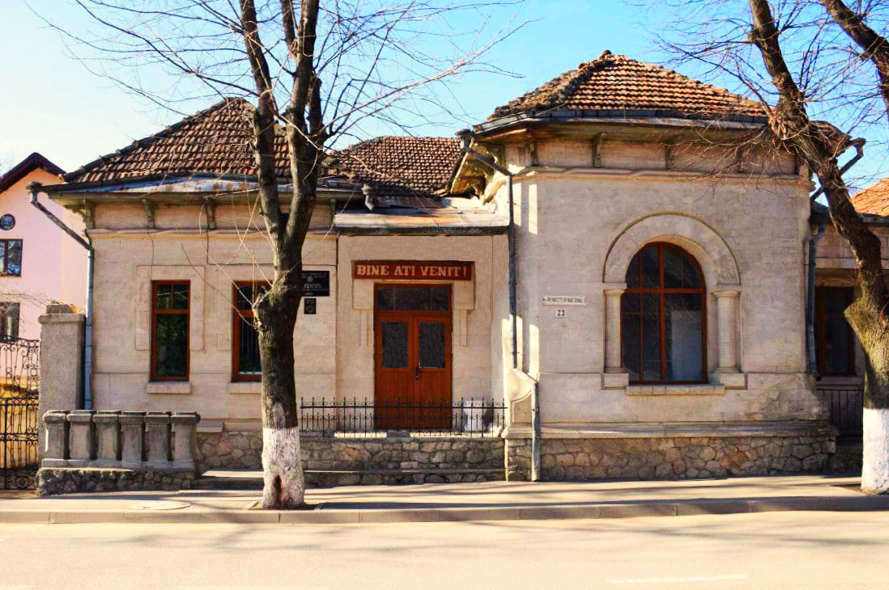

Orhei
„Orașul de pe malul Răutului — unde istoria respiră prin fiecare piatră și sufletul moldovenesc trăiește în fiecare om."
Bun venit în Orhei
Un oraș cu suflet, cu rădăcini adânci în pămîntul moldovenesc și cu un viitor plin de promisiuni.
Orhei este un oraș din centrul Republicii Moldova, reședința raionului Orhei, situat pe râul Răut. Cu o populație de circa 25 000 de locuitori, orașul reprezintă un centru administrativ, cultural și economic important al țării.
Fondat în secolul al XIV-lea, Orhei poartă în sine urmele mai multor civilizații — de la geto-daci și romani, la moldovenii medievali și epoca modernă. Complexul muzeal „Orheiul Vechi" este una dintre cele mai vizitate atracții turistice din Moldova.
Astăzi, Orhei este un oraș vibrant care îmbină cu grație tradiția și modernitatea, oferind vizitatorilor o experiență autentică moldovenească.


Orașul în câteva cuvinte
Un loc unde natura, istoria și cultura se întâlnesc în cel mai armonios mod
Patrimoniu Istoric Excepțional
Complexul Orheiul Vechi, cetatea medievală și zeci de monumente istorice fac din Orhei un muzeu în aer liber, cu straturi de civilizație de mii de ani.
Natură Spectaculoasă
Meandrul dramatic al râului Răut, stâncile calcaroase și văile verzi creează un peisaj de o frumusețe rară, perfect pentru drumeții și fotografie.
Gastronomie și Vinuri
Vinurile din podgoriile locale, brânzeturile artizanale, mierea și bucătăria tradițională moldovenească oferă o experiență culinară autentică și memorabilă.
Spiritualitate Profundă
Mănăstirea Curchi, mănăstirile rupestre și numeroasele biserici fac din Orhei un important centru de spiritualitate ortodoxă și pelerinaj religios.
Viață Culturală Bogată
Festivaluri de folclor, concerte, expoziții și evenimente culturale pe tot parcursul anului animă viața urbană și păstrează tradițiile moldovenești vii.
Oameni Primitori
Ospitalitatea moldovenească legendară — „Bine ai venit!" — este poate cel mai prețios dar pe care Orhei îl oferă fiecărui vizitator care îi calcă pragul.
Evenimente
Rămâi la curent cu viața culturală a orașului

Festivalul „Orheiul Vechi — Vatra Strămoșească"
Cel mai mare festival de cultură și tradiții din regiune. Muzică populară, meșteșugari, gastronomie tradițională și spectacole folclorice.

Sărbătoarea Vinului Orheian
Degustări de vinuri locale, prezentări ale podgoriilor din raion, artizani locali și muzică tradițională moldovenească la cupe de vin.

Expoziții la Muzeul de Istorie și Etnografie
Colecții permanente și temporare cu artefacte din toate epocile istorice ale Orheiului, de la geto-daci la epoca contemporană.
Simboluri & Produse Locale
🏛 Monumente Istorice
🎤 Personalități Celebre
🍯 Produse Locale
- Vinuri
- Soiuri locale din podgoriile zonei
- Miere
- Producție apicolă tradițională
- Brânzeturi
- Preparate artizanale specifice regiunii
Fișa Orașului Orhei
| Caracteristică | Date |
|---|---|
| Țara | 🇲🇩 Republica Moldova |
| Raionul | Orhei (reședința de raion) |
| Suprafața | ~35 km² |
| Populație | ~25 000 locuitori |
| Altitudine | ~80 m față de nivelul mării |
| Cod poștal | MD-3500 |
| Cod telefonic | +373 235 |
| Distanța față de Chișinău | ~40 km nord (traseul M2) |